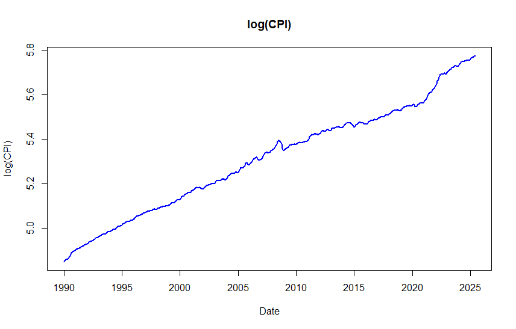
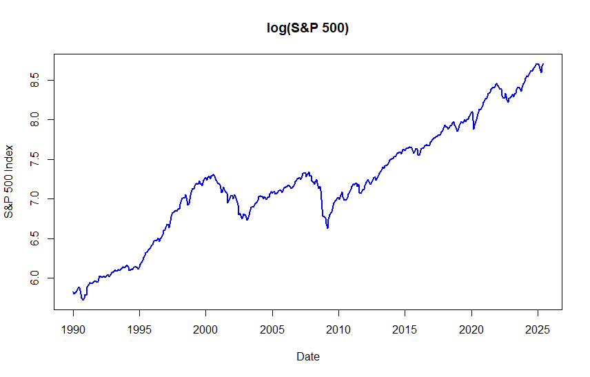

12 Nonstationary processes
12.1 Integrated process
In some application fields, such as economics and finance, the existence of trends in the analyzed time series is common.
- Here the term “trend” is used quite generally.
Earlier in this material, it was discussed that nonstationary time series containing a trend can be investigated using methods developed for stationary time series if the trend is first removed using a suitable transformation. The most popular of such transformations is taking differences, which amounts to modelling the differenced series \(\Delta y_t = y_t-y_{t-1}\) where \(\Delta = 1-B\) is the difference operator.
These series might seem stationary and thus be modelled with stationary models reasonably well.
If the differences still include some sort of trend, it is natural to extend this procedure to the difference of these differences \(\Delta^2 y_{t} = y_t-2y_{t-1}+y_{t-2}\), and so on. This, however, is very rare in practice, and typically only first differences are considered when differencing data.
Based on the aforementioned, let us introduce the following definition (here for univariate time series processes):
Integrated process. A stochastic process \(y_t\) \(\{y_t, t=1,2,\dots\}\) is said to be an integrated process of order \(d\), or an \(I(d\)) process if the \(d\) times differenced process \[\begin{equation*} \Delta^d y_t \end{equation*}\] is stationary (or asymptotically stationary), but the \((d-1)\) differenced process \(\Delta^{d-1} y_t\) is not.
- In some definitions, the process is first centered by subtracting its mean, that is \[\begin{equation*} \Delta^d(y_t-\mathsf{E}(y_t)), \quad t=1,2,\dots, \end{equation*}\] is stationary, while \(\Delta^{d-1}(y_t-\mathsf{E}(y_t))\) is not. This form accounts for the deterministic component of the process.
If \(y_t\) is an \(I(d)\) process, we denote \[\begin{equation*} y_t\sim \mathrm{I}(d) \,\,\, (d\geq 1). \end{equation*}\] In this course, we will consider only \(d=1\) and \(d=0\).
Random walk. The simplest example of an \(I(1)\) process is random walk, which was briefly covered already in connection to the AR(1) process. Here the random walk is defined with a drift term \(\nu\): \[\begin{equation*} \Delta y_t = \nu + u_t, \,\, t=1,2,\ldots, \end{equation*}\] where \(u_t\sim \mathsf{iid}(0,\sigma^2\)). By recursive substitutions, we get \[\begin{equation*} y_t=y_0+\nu t + \sum_{j=1}^{t}u_j, \,\,\, t=1,2,\dots \end{equation*}\]
- Sometimes, depending on the time series and application that we are considering. it is assumed that \(\nu=0\), that is, we have a random walk without drift, and hence the term \(\nu t\) above vanishes. Furthermore, in this case, differences \(y_t-y_{t-1}=u_t\) from the process \(y_t=y_0+\sum_{j=0}^{t-1}u_{t-j}\) are stationary, and this holds even if instead of \(u_t\sim\mathsf{iid}(0,\sigma^2)\) we only assume \(u_t\) is stationary.
Assuming the initial (starting) value \(y_0\) as constant, for the random walk we get (details are left as an exercise) \[\begin{equation*} \mathsf{E}(y_t)=y_0+\nu t, \end{equation*}\] \[\begin{equation*} \mathsf{Var}(y_t)=\mathsf{Var}\left(\sum_{j=1}^{t}u_j\right)=\sigma^2t, \end{equation*}\] \[\begin{equation*} \mathsf{Cor}(y_t,y_{t+k})=\frac{1}{\sqrt{1+k/t}}, \,\, k\geq 0. \end{equation*}\] Here we can observe that random walk is not stationary even if the value of \(y_0\) is altered.
As \(\Delta y_t\sim\mathsf{iid}(\nu,\sigma^2)\) is stationary, we can conclude that the random walk is an \(I(1)\) process.
From the calculations above, we can observe that for random walk \(\mathsf{Var}(y_t)\rightarrow\infty\) and \(\mathsf{Cor}(y_t,y_{t+k})\rightarrow 1\) with any \(k>0\) as \(t\rightarrow\infty\). Therefore, random walk processes are strongly autocorrelated, and due to their wandering nature, they exhibit trend-like features.
In other words, we can summarize:
An \(I(0)\) process is stationary: it fluctuates around a constant mean, has constant variance, and autocorrelations decay quickly. It is often described as mean-reverting and has short memory.
An \(I(1)\) process is non-stationary: it exhibits a stochastic trend (see below) and wanders over time. Each innovation has a permanent effect, and autocorrelations decay slowly, indicating long memory.
ARIMA processes and trends in time series. Random walk is the simplest example of so-called ARIMA processes.
The acronym ARIMA stands for AutoRegressive Integrated Moving Average, where the letter \(I\) refers to integration — the idea that the process is formed by summing (or “integrating”) past innovations \(y_t = \sum_{j=0}^{t-1} u_{t-j}\). This cumulative sum introduces a stochastic trend, meaning the trend component is random and evolves over time due to the accumulation of shocks.
If the process includes a drift term \(\nu \neq 0\), the stochastic trend fluctuates around a deterministic trend \(y_0 + \nu t\). A deterministic trend is a non-random, predictable function of time — typically linear — around which the series may fluctuate.
Trend-stationary vs. difference-stationary processes. A process of the form \[\begin{equation*} y_t = \alpha + \beta t + \psi(B) u_t, \end{equation*}\] where \(\psi(B)\) is the MA(\(\infty\)) representation of an ARMA process (including the special case \(\psi(B) = 1\)), is called a trend-stationary process. If the deterministic trend \(\beta t\) (or \(\alpha + \beta t\)) is removed, the residual process is stationary.
- In contrast, a difference-stationary process (e.g., a random walk) requires differencing to achieve stationarity, as it contains a stochastic trend.
Types of trends. Many economic and financial time series exhibit trends, which can be either deterministic or stochastic.
A deterministic trend is a fixed function of time (e.g., \(\beta t\)), around which the series fluctuates due to stationary noise. Removing the trend yields a stationary process and implies mean reversion.
A stochastic trend results from the accumulation of random shocks, causing the series to drift persistently. It implies permanent effects of innovations and requires differencing for stationarity.
Empirical evidence suggests that stochastic trends are often more appropriate for modeling macroeconomic and financial time series.
12.2 ARIMA(\(p\),\(d\),\(q\)) process
If the process \(y_t, \, t=0,1,\dots\), is non-stationary, but the difference \(\Delta y_t\) is stationary and follows an invertible ARMA(\(p,q\)) process, \(y_t\) is called an ARIMA(\(p,1,q\)) process.
The order in the middle refers to the fact, that stationarity is achieved by differencing the process once.
If the process is non-stationary after being differenced once, but the second differences \(\Delta^2y_t=(y_t-y_{t-1})-(y_{t-1}-y_{t-2})\) follow a stationary and invertible ARMA(\(p,q\)) process, \(y_t\) is called an ARIMA(\(p,2,q\)) process.
In general, \(y_t\) is called an ARIMA(\(p,d,q\)) process if it becomes a stationary and invertible ARMA(\(p,q\)) process after differencing \(d\) times.
That is, \(\Delta^d y_t \sim \mathrm{ARMA}(p,q)\).
In practice, \(d=1\) is by far the most common case, \(d=2\) can be encountered quite rarely, and \(d>2\) can be safely ignored.
With \(d=0\), we obtain the special case of an ARMA(\(p,q\)) process.
The typical properties of an ARIMA(\(p\),1,\(q\)) process are generally the same as for random walk. The realizations exhibit a wandering nature explained by the variance growing as a function of \(t\) and strong autocorrelation even though the autocorrelation function cannot be defined like with stationary processes.
A warning on overdifferencing. While differencing is a fundamental tool for making a nonstationary time series stationary, applying it too many times, a problem known as overdifferencing, can be counterproductive. It is a common pitfall to assume that if one difference helps, a second one might help more. Even more often, you should not mechanically difference a time series that is already “stationary enough”.
- Doing so without a strong theoretical justification (e.g., an economic model suggesting a process is integrated of order two, I(2)), is highly unlikely and can even harm your statistical/econometric analysis.
Overdifferencing does not make a series “more stationary”. Instead, it introduces new artificial patterns into the data that were not present in the original process. This complicates model building and can lead to poor analyses and forecasts.
- The most significant problem is that overdifferencing creates a specific, predictable correlation structure.
Illustration: Overdifferencing white noise. Let see what happens when we difference a series that is already stationary: a white noise process, \(y_t = \varepsilon_t\), where \(\varepsilon_t \sim \mathsf{wn}(0, \sigma^2)\). This series has by definition zero autocorrelation at all lags. If we mistakenly difference it, we create a new series, \(z_t= \Delta y_t = y_t - y_{t-1} = \varepsilon_t - \varepsilon_{t-1}\). This new series, \(z_t\), is no longer white noise. Let’s examine its properties:
Variance: \(\mathsf{Var}(z_t) = \mathsf{Var}(\varepsilon_t - \varepsilon_{t-1}) = \mathsf{Var}(\varepsilon_t) + \mathsf{Var}(\varepsilon_{t-1}) = 2\sigma^2\). We have doubled the variance!
Autocorrelation: The autocovariance at lag 1 is \(\mathsf{Cov}(z_t, z_{t-1}) = \mathsf{Cov}(\varepsilon_t - \varepsilon_{t-1}, \varepsilon_{t-1} - \varepsilon_{t-2}) = -\mathsf{Var}(\varepsilon_{t-1}) = -\sigma^2\).
The autocorrelation at lag 1 is therefore: \[\begin{equation*} \rho_1 = \frac{\mathsf{Cov}(z_t, z_{t-1})}{\sqrt{\mathsf{Var}(z_t)\mathsf{Var}(z_{t-1})}} = \frac{-\sigma^2}{\sqrt{2\sigma^2 \cdot 2\sigma^2}} = \frac{-\sigma^2}{2\sigma^2} = -0.5. \end{equation*}\] By differencing a series with zero autocorrelation, we created a new series with a perfectly defined negative autocorrelation of -0.5 at the lag 1.
As we will discuss later on, always check for stationarity using tools like the ACF plot and unit root tests (e.g., ADF test, see the coming section) before applying another round of differencing. If the series already appears stationary enough, stop!
12.3 Unit root process
Let’s consider the (univariate) AR(\(p\)) process \[\begin{equation*} a(B)z_t=u_t, \end{equation*}\] where \(a(B)=1-a_1 B-\dots-a_p B^p\).
- Here notation \(z_t\), as in Section 2, will be used when the unit root process is not assumed to have a constant or other deterministic trends.
It can be shown (see the Extra tag below) that the polynomial \(a(\mathsf{B})\) can be rewritten as \[\begin{equation*} a\left(B\right) =\Delta -\phi B - \phi _{1}\Delta B -\cdots -\phi _{p-1}\Delta B^{p-1}, \quad \phi =-a\left( 1\right), \end{equation*}\] so the process \(z_t\) can be represented as \[\begin{equation*} \Delta z_{t}=\phi z_{t-1}+\phi _{1}\Delta z_{t-1}+\cdots +\phi _{p-1}\Delta z_{t-p+1}+ u _{t}, \quad t=1,2,\ldots, \end{equation*}\] where \(u _{t}\sim \mathsf{iid}(0,\sigma ^{2})\) (or that \(u_t\) is white noise).
Let’s assume that for \(a(z)\) the following holds: \[\begin{equation*} \text{If} \,\, a(z)=0, \,\, \mathrm{then} \,\, |z|>1 \,\, \mathrm{or} \,\, |z|=1. \end{equation*}\] In other words, the roots of the polynomial \(a(z)\) lie outside or at the unit circle on the complex plane.
- If all the roots lie outside the unit circle, \(z_t\) is (at least) asymptotically stationary (as meeting the stationarity condition of the AR(\(p\)) process).
Let us now assume there is exactly one unit root. From the known properties of polynomials, it follows that \[\begin{equation*} a(z)=(1-z)b(z), \end{equation*}\] where \(b(z)\) is a polynomial of the degree (at most) \(p-1\) with its roots inevitably lying outside the unit circle (see the Extra below).
- It is clear that this is equal to \(\phi=0\) above. When \(\phi=0\), the above-mentioned polynomial becomes \(b(z) =1-\phi _{1}z-\cdots -\phi_{p-1}z^{p-1}:=\phi(z)\).
Thus, \(\Delta z_t\) is \(I(0)\) and as the roots of the polynomial \(\phi(z)\) lie outside the unit circle, such initial values \(\Delta z_{t-1},...,\Delta z_{t-p+1}\) can be found that \(\Delta z_t\) is stationary.
- Therefore, the process \(\Delta z_t\) can be written as \(\Delta z_{t}=\phi(B)^{-1}u _{t}\), which is a special case of the random walk we looked at earlier but with the stationary AR(\(p-1\)) process \(\phi(\mathsf{B}) ^{-1}u _{t}\) replacing the innovation \(u_t\).
As discussed above in connection to integrated and ARIMA processes, the presence of a unit root is particularly interesting question from an economic point of view. In models (and processes) with unit roots, shocks (such as policy or technological interventions and disruptions) have persistent effects that last forever, whereas with stationary cases such shocks have only a temporary effect. Therefore, it is of particular interest to test the unit root hypothesis in \(y_t\).
12.4 Testing for a unit root: ADF test
Let us continue to work with unit root processes and examine how the unit root can be tested. Among various alternatives, we focus on the Augmented Dickey-Fuller (ADF) test, which is the most commonly used unit root test.
Additional background and motivation for unit root testing are provided below in the Extra tab before proceeding to the ADF test.
Augmented Dickey-Fuller (ADF) test. Based on the discussion in the previous section, assume (for simplicity) that \(y_t = \mu + z_t\), where \(z_t \sim \text{AR}(p)\), and hence \(y_t\) also follows an AR(\(p\)) process. To test for a unit root in \(y_t\), we use the following test regression model \[\begin{equation*} \Delta y_t = \nu + \phi y_{t-1} + \sum_{j=1}^{p-1} \phi_j \Delta y_{t-j} + u_t, \quad u_t \sim \mathsf{iid}(0, \sigma^2), \quad t = 1, 2, \ldots \end{equation*}\] The null hypothesis is \(H_0: \phi = 0\), which implies that \(y_t\) has a unit root and is non-stationary. Under the alternative hypothesis \(H_1: \phi < 0\), the process is stationary around a deterministic mean.
Here in the ADF test the intercept term \(\nu\) is related to the mean of the process via \(\nu = -\phi \mu\).
The test statistic is the t-ratio of the estimated coefficient \(\widehat{\phi}\), often denoted \(\tau_\phi = \frac{\widehat{\phi}}{\mathrm{s.e.} (\widehat{\phi})}\). Its asymptotic distribution under the null is non-standard but known, and critical values are tabulated in the literature.
Importantly, the asymptotic properties of the test hold even without assuming normality of the errors; it is sufficient that \(u_t\) are independent and identically distributed with finite variance.
If the null hypothesis of unit root (\(H_0: \phi=0\)) cannot be rejected, according to the above equation, an AR(\(p-1\)) model can be built on the differences.
- In other words, this implies the need to take first differences to get stationary time series.
Determining the lag length \(p\) and deterministic terms in the ADF test. Executing the ADF test regression requires specifying the lag length \(p\), which can be selected using information criteria (such as AIC or BIC), sequential testing (covered in the next section), or based on common fixed choices related to the data frequency.
- It is generally advisable to try a few different values of \(p\) and compare the resulting test outcomes for robustness.
The ADF test regression can also be extended to include a trend (together with the constant). In this case, the test regression includes the term \(\mu_0 + \mu_1 t\), allowing for a deterministic trend in the data: \[\begin{equation*} \Delta y_t = \mu_0 + \mu_1 t + \phi y_{t-1} + \sum_{j=1}^{p-1} \phi_j \Delta y_{t-j} + u_t. \end{equation*}\] The null hypothesis remains \(H_0:\phi = 0\), indicating a unit root.
Deciding which deterministic terms to include is a crucial step. A constant term is typically included by default, while the inclusion of a trend term depends on whether a trending pattern is evident in the data. This decision can be guided by graphical inspection or theoretical considerations relevant to the application.
Empirical examples. Let us consider unit root testing for the few time series considered above in different parts. As discussed, the first thing in the ADF test is to determine which deterministic terms to include in the test regression. Basically you should always include a constant term, but whether the deterministic trend component should be included as well should be determined based on visual inspection and background knowledge on the time series at hand.
In the following illustrations, for simplicity, we fix the number of lagged differenced lags \(p\) in the ADF test to 6, 8 or 10 lags. The lag length could and should be varied to examine whether the testing results are intact for this selection.
- Consider log of the CPI time series (Introduction): In this case, there is clearly an upward trend present. It seems reasonable to argue that due to different (economic) reasons we can think that price level is steadily going up and a deterministic trend seems reasonable to be included in the ADF test.
ADF-test (deterministic terms: constant and trend)
p=8: Test statistic: -1.113, p-value: 0.925
p=6: Test statistic: -1.517, p-value: 0.823
p=10: Test statistic: -1.451, p-value: 0.845
- Log of the S&P 500 index. Increasing stock prices point out very well a possible stochastic trend, but it seems difficult to argue that there is deterministic upward trend in stock prices. Therefore, including a constant is surely good choice, but for robustness we could also examine the unit root hypothesis also when including deterministic trend as well (together with the constant) in the ADF regression.

ADF-test (deterministic terms: constant)
p=8: Test statistic: -0.769, p-value: 0.826
p=6: Test statistic: -0.302, p-value: 0.922
p=10: Test statistic: -0.772, p-value: 0.825
ADF-test (deterministic terms: constant and trend)
p=8: Test statistic: -2.193, p-value: 0.492
- Taking the log-differences of the CPI and S&P 500 indices results in the time series previously shown in the Introduction. A visual inspection alone suggests that the unit root hypothesis is no longer reasonable for these differenced series. To confirm this, let’s examine the Augmented Dickey-Fuller (ADF) test results below. The test includes a constant, as a deterministic trend is clearly no longer present in the data.
Putting the testing results together, the results show that the ADF tests fail to reject the unit root hypothesis for the original level series of both the CPI and the S&P 500.
For the CPI levels, even after including a constant and a linear trend in the test regression, we still cannot reject the null hypothesis of a unit root. This strongly suggests that the CPI can be treated as an \(I(1)\) process (integrated of order one).
A similar conclusion holds for the S&P 500 index.
These conclusions are reinforced by the test results for their log-differences, which appear to be stationary (i.e., \(I(0)\) variables). This provides a consistent picture: the original series are non-stationary \(I(1)\), but their first differences are stationary (\(I(0)\)).
ADF-tests (deterministic terms: constant)
logdiff(CPI):
p=8: Test Statistic: -7.744 , p-value: 1.248e-11
p=6: Test Statistic: -4.764, p-value: 7.568e-05
p=10: Test Statistic: -7.886, p-value: 5.331e-12
logdiff(S&P 500)
p=8: Test statistic: -6.095, p-value: 1.303e-07
p=6: Test statistic: -7.011, p-value: 8.741e-10
p=10: Test statistic: -5.451, p-value: 3.299e-06
A critical limitation: The low power of the ADF test. An important limitation of the ADF test is its low statistical power. In practical terms, this means: The ADF test often fails to reject the null hypothesis of a unit root, even when the time series is actually stationary.
In other words, the test is not always very good at correctly identifying a stationary process, especially if the process is close to non-stationary (e.g., an AR(1) process where the autoregressive coefficient \(\phi_1\) is close to 1).
If we are unable to reject the presence of a unit root, it does not necessarily mean that it is true and the process is necessarily \(I(1)\). It could just be (but of course not always!) that there is not sufficient amount of information in the data to reject the unit root.
The practical takeaway is that it’s common for a truly stationary time series to produce a p-value from the ADF test that is too high to be considered statistically significant. You can observe this phenomenon by running the following code, which simulates AR(1) processes and computes the ADF test statistic, with a varying value of the AR(1) coefficient.
From empirical point of view, the choice whether the process is a unit root process (nonstationary) or a “near” unit root process (stationary) is interesting but at times complicated.
- Particularly ambiguous are, for example, interest rates. Interest rates are highly persistent and the unit root hypothesis cannot often be rejected, although nonstationary such as random walk interest rates do not seem to be very plausible from an economic point of view.
# Simulating AR(1) process with different values of phi_1
# - Change T and phi_1
# Load the libraries
library(urca)
library(tseries)
T=200 # number of observations
phi_1=0.98
epsilon=rnorm(T) # random draws from nid(0,1)
y=epsilon
y[1]=0 # for simplicity and E(y_t) = 0
for(i in 2:T) y[i] = phi_1*y[i-1]+epsilon[i]
plot(y,type="l", main="Simulated realization")
test_ur_none <- ur.df(y, type = "none", lags = adf_lags)
stat_none <- test_ur_none@teststat[1, 1]
p_val_none <- punitroot(q = stat_none, N = length(test_ur_none@res), trend = "nc")
cat("P-value:", p_val_none, "\n")
12.5 R Lab
All the R codes considered in this section are compiled in the following link: